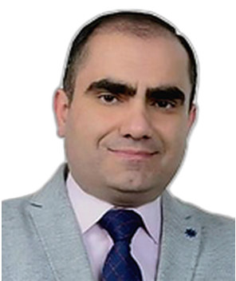

Profile
Ilkin Gulusoy is an associate professor of Azerbaijani Turkish and literature at Kafkas University. He received a doctorate from Baku Slavic University on 18 November 2008. The thesis is the syntax of the language of Qadi Burhan al-Din, supervised by Gazanfar Kazimov. His master’s thesis, on the rubai of Muhammad Fuzuli, was completed at Baku State University on 2 June 2003. His bachelor’s degree in Azerbaijani language and literature is from Baku State University, dated 5 July 2001. He taught at Baku Slavic University from 2003 to 2012 and has taught at Kafkas University since 2012.
Work experience
Kafkas University, Kars, Turkey
Associate Professor
- Azerbaijani Turkish and literature
Kafkas University
2015–2018Associate Professor, visiting contract
Kafkas University
2012–2015Assistant professor, visiting contract
Baku Slavic University
2010–2012Assistant professor
Baku Slavic University
2005–2010Lecturer
Baku Slavic University
2003–2005Research assistant
Education
PhD
18 November 2008Contemporary Turkish dialects and literature. Thesis: syntax of the language of Qadi Burhan al-Din. Advisor: Gazanfar Kazimov
Baku Slavic University, Baku, Azerbaijan
Master’s degree
2 June 2003Azerbaijani literature. Thesis: the rubai of Muhammad Fuzuli. Advisor: Muharrem Veliyev
Baku State University
Bachelor’s degree
5 July 2001Azerbaijani language and literature
Baku State University
Supervision
- Master’s — Supervised completed master’s theses at Kafkas University
Publications
Books and textbooks
1. C. Yazılan ulusal/uluslararası kitaplar veya kitaplardaki bölümler: C1. Yazılan ulusal/uluslararası kitaplar: ÇAĞDAŞ AZERBAYCAN ŞAİRİ ALİZADE NURİ’NİN ŞİİR DÜNYASINA YOLCULUK (2023)., GULUSOY İLKİN, AY Habibe, Sonçağ Akademi, Editör:Şureddin Memmedli, Basım sayısı:1, Sayfa Sayısı 154, ISBN:978-625-6875-37-1, Türkçe(Bilimsel Kitap)
2. TÜRKİYE TÜRKÇESİ İLE AZERBAYCAN TÜRKÇESİNİN KARŞILAŞTIRMALI DEYİMBİLGİSİ (Organ Adları İçeren Deyimler) (2022)., GULUSOY İLKİN, ŞAHİN DEDE SEMA, Sonçağ Yayıncılık, Editör:Mahire Hüseynova, Mayrambek Orozobayev, Basım sayısı:1, Sayfa Sayısı 661, ISBN:978-625-8227-99-4, Türkçe(Bilimsel Kitap)
3. Neriman Nerimanov. Türk-Azerbaycan Dilinin Muhtasar Sarf-Nahivi (Azerbaycan Türkçesinin Kısa Dilbilgisi) (2020)., GULUSOY İLKİN, Ertem Kafkars Eğitim Yayınları, Editör:Oktay KIZILKAYA, Basım sayısı:2, Sayfa Sayısı 170, ISBN:978 - 605 - 0000 - 00 - 0, Türkçe(Bilimsel Kitap)
4. Qazi Bürhaneddin ”Divan”ının Dilinin Sintaksisi (2019)., GULUSOY İLKİN, Sonçağ Akademi Yayınları, Editör:Qezenfer Kazımov, Basım sayısı:1, Sayfa Sayısı 210, ISBN:978 - 605 - 7539 - 94 - 6, Türkçe(Bilimsel Kitap)
5. Neriman Nerimanov. Türk-Azerbaycan Dilinin Muhtasar Sarf-Nahivi (2019)., GULUSOY İLKİN, Sonçağ Akademi Yayınları, Editör:Oktay Kızılkaya, Basım sayısı:1, ISBN:978 - 605 - 7539 - 96 - 0, Türkçe(Bilimsel Kitap)
Book chapters
1. C. Yazılan ulusal/uluslararası kitaplar veya kitaplardaki bölümler: C2. Yazılan ulusal/uluslararası kitaplardaki bölümler: LUÇŞAYA NAUÇNAYA STATYA 2023, Bölüm adı:(THE EXPRESSIVE FUNCTION OF LANGUAGE) (2023)., GULUSOY İLKİN, NAUKA İ PROSVEŞENİE ULUSLARARASI BİLİMSEL İŞBİRLİĞİ MERKEZİ, Basım sayısı:1, Sayfa Sayısı 149, ISBN:978-5-00236-105-2, İngilizce(Bilimsel Kitap)
2. EDEBİYAT VE KÜLTÜR ARAŞTIRMALARI (HASANBEY ZERDÂBÎ ANISINA), Bölüm adı:(KRIM-TATAR ATASÖZLERİNDE ERKEK) (2022)., GULUSOY İLKİN, Yalçın Ceren, Sonçağ Yayıncılık, Editör:İLKİN GULUSOY, Basım sayısı:1, Sayfa Sayısı 16, ISBN:978-625-8227-00-0., Türkçe(Bilimsel Kitap)
3. SOSYAL BİLİMLER ALANINDA GÜNCEL ARAŞTIRMALAR (HÜSEYİN CAVİD-140), Bölüm adı:(HÜSEYİN CAVİD’İN “ŞEYH SENAN” ESERİ ÜZERİNE) (2022)., GULUSOY İLKİN, AY Habibe, Sonçağ Yayıncılık, Editör:ELLADA GERAYZADE, Basım sayısı:1, Sayfa Sayısı 13, ISBN:978 - 625 - 8379 - 73 – 0, Türkçe(Bilimsel Kitap)
4. DİL ARAŞTIRMALARI, Bölüm adı:(Azerbaycan Türkçesi ve Türkiye Türkçesi Şekil Bilgisi Kitaplarında Kök ve Ek Kavramı Üzerine) (2020)., GULUSOY İLKİN,Bulut Ceren, Sonçağ Akademi, Editör:İlkin GULUSOY, Basım sayısı:1, Sayfa Sayısı 125, ISBN:978-625-7714-38-9, Türkçe(Bilimsel Kitap)
5. Filoloji Alanında Araştırma ve Değerlendirmeler, Bölüm adı:(XIX. Y.Y. Azerbaycan Şairi Kasımbey Zakir’ın “Vilayetin Mağşuşluğu Hakkında”Adlı Satiresi Üzerine) (2019)., GULUSOY İLKİN, Gece Akademi, Editör:Dursun KÖSE, Basım sayısı:1, ISBN:978-605-7631-50-3, Türkçe(Bilimsel Kitap)
6. Language and Literatura I, Bölüm adı:(Psychology Of Natıon In “Kamancha” Play By Jalıl Mammadguluzada (In The Background Of The Relations Between Azerbaijan and Armenia)) (2019)., GULUSOY İLKİN, AKADEMİSYEN KİTABEVİ A.Ş., Editör:Mesut Gün, Başak Karakoç Öztürk, Basım sayısı:1, Sayfa Sayısı 118, ISBN:978-605-258-320-3, İngilizce(Bilimsel Kitap)
7. İnnovatsionnıe Protsessı v Nauke i Obrazovanii, Bölüm adı:(Tematicheskiy Diapazon Novoyazerbaydjanskoy Prozı) (2019)., Gerayzade Ellada,GULUSOY İLKİN, ”NAUKA İ PROSVEŞENİE”, Editör:G. Y. Gulyayev, Basım sayısı:1, Sayfa Sayısı 187, ISBN:978-5-907160-83-5, Rusça(Bilimsel Kitap)
8. İnnovasionnıe Prosessı V Nauke İ Obrazovanii - Monografiya, Bölüm adı:(Structural and Semantic Features of The Imperatıve Sentences Used in The Language of Mahmud Al-Kashgarı’s ”Dıwan-Lughat-Al Turk” (In Comparıson Wıth The Azerbaijanı Turkısh)) (2018)., GULUSOY İLKİN, NAUKA İ PROSVEŞENİE, Editör:G.Y. GULYAYEV, Basım sayısı:1, Sayfa Sayısı 364, ISBN:978-5-907103-40-5, İngilizce(Bilimsel Kitap)
Peer-reviewed journal articles
1. GULUSOY İLKİN (2024). ONOMASTIC RESEARCH IN THE PARADIGM OF MODERN LINGUISTICS. BUTA, 3(16), 22-34.
2. GULUSOY İLKİN (2024). Azerbaycan Atasözlerinde Aile ve Toplumsal Cinsiyet Olgusu (Family and Gender Roles in Azerbaijan Proverbs). Folklor/Edebiyat(118), 487-508.
3. GULUSOY İLKİN (2023). CULTURAL MEMORY AS A FACTORIN PRESERVING NATIONAL IDENTITY. BUTA International Journal of Scientific Research, 3(12), 58-65.
4. GULUSOY İLKİN (2023). ABOUT THE CONJUNCTIONS and PREPOSITIONS IN THE LANGUAGE OF KUL ALI’S POEM “KISSA-I-YUSUF”. TURAN-SAM, 15(59), 70-75.
5. GULUSOY İLKİN (2019). TÜRKİYE TÜRKÇESİ VE AZERBAYCAN TÜRKÇESİNDE ŞART CÜMLESİNE DAİR. Türkiyat Mecmuası / Journal of Turkology, 29(1), 81-92., Doi: 10.18345/iuturkiyat.560218 5. Uluslararası hakemli dergilerde yayımlanan makaleler:
6. GULUSOY İLKİN (2019). Mirze Feteli Ahundzade’nin Komedilerinin Dilinde Kullanılmış Yüklem Yan Tümceli Bağımlı Birleşik Cümlelerin Yapısal-Anlamsal Özellikleri. TURAN-SAM: TURAN Stratejik Araştırmalar Merkezi, 125-129. (Yayın No: 4956153) 6. GULUSOY İLKİN (2019). Analysis Of The Story “Dark-Complexioned Girl” (“Garaja Giz”) By Suleyman Sani Akhundov. Internаtіоnаl Scіentіfіc Jоurnаl “Internаukа”, 35-41., Doi: 10.25313/2520-2057-2019-4-4811
7. GULUSOY İLKİN (2018). Lexıcal And Semantıc Features Of Antroponıms In The Poem “Greetıngs To Heydar Baba” By Mohammad Hosseın Shahrıar. Studia Humanitatis(4)
8. GULUSOY İLKİN (2018). Azerbaijani Complex Noun Phrases of XIII-XIV Centuries. Educational Researcher, 9(47), 870- 883.
9. Gerayzade Ellada,GULUSOY İLKİN (2018). Retsepsiya Tvoçestva Bayrona v Azerbaydjanskom Literaturavedenii. Kremenetski Komparativnı Studii, 45-53.
10. GULIYEVA KONUL,GULUSOY İLKİN (2018). AZERBAYCAN EDEBİYATINDA KARABAĞ TEMALI ŞİİRLER (ŞİİRRLERDE VATAN ÖZLEMİ). Uluslararası Türkçe Edebiyat Kültür Eğitim Dergisi, 7(4)
11. GULUSOY İLKİN (2018). The Subordınate Complex Sentences Used In The Dramatıc Works By Mirza Fatali Akhundzadeh. INTERNATIONAL JOURNAL OF INNOVATIVETECHNOLOGIES IN SOCIAL SCIENCE(2), 50-56.
12. GULİYEV İLKİN (2017). Gövsi Tebrizi’nin Dilinde Kullanılmış Şart Yan Cümleli ve Karşılaştırma Yan Cümleli Birleşik Tümcelerin Yapısal Özellikleri. TURAN-SAM: TURAN Stratejik Araştırmalar Merkezi, 9(36), 124-132., Doi: 0.15189/1308- 8041
13. GULİYEV İLKİN (2015). Türk ve Azerbaycan Dilbilgisinde Ad Tamlamalarının Araştırılması Üzerine. International Journal of Languages’ Education and Teaching, 1453-1465.
14. Azerbaycan Türkçesi Grameri (Ses Bilgisi ve Söz Varlığı) (2018)., GULUSOY İLKİN, Sonçağ, Editör:Ellada GERAYZADE, Basım sayısı:1, Sayfa Sayısı 168, ISBN:978-605753914-4, Türkçe(Ders Kitabı)
15. Ümmi İsa’nın ”Mehri ve Vefa” Poemasının Dili (2013)., GULİYEV İLKİN,Bağırov Nizami, Mütercim, Basım sayısı:1, Türkçe(Ders Kitabı)
16. Müasir Azerbaycan Dilinde Karışık Tipli Mürekkeb Cümlelerin Sxematik Strukturu (2012)., GULİYEV İLKİN,ABBASOV Edalet,İSMİHANOVA Gülhanım, Mütercim, Basım sayısı:1, Sayfa Sayısı 68, Türkçe(Ders Kitabı)
17. Qul Eli’nin ”Qisseyi-Yusif” Poemasının Dili (2011)., GULUSOY İLKİN, Kİtab Alemi, Editör:Şaban Hüseynov, Basım sayısı:1, Türkçe(Ders Kitabı)
18. Azerbaycan Dilinin Tarihi Grammatikası (2011)., GULİYEV İLKİN, Mütercim, Editör:Dürdane Eliyeva, Basım sayısı:1, Sayfa Sayısı 71, Türkçe(Ders Kitabı)
19. Sade Cümle Sintaksisine Dair Praktikum (2011)., ABBASOV Edalet,GULİYEV İLKİN, Mütercim, Basım sayısı:1, Türkçe(Ders Kitabı)
Conference papers and abstracts
1. B. Uluslararası bilimsel toplantılarda sunulan ve bildiri kitaplarında (proceedings) basılan bildiriler: GULUSOY İLKİN, AY Habibe (2022). MOLLA PENAH VAGIF’IN HAYATI VE ŞİİRLERİ ÜZERİNE. The XXIII International Scientific Symposium “Integration of cultures and multiculturalism”, dedicated to the 305 anniversary of Molla Panah Vagif, 15-19. (Tam Metin Bildiri/Sözlü Sunum)
2. GULUSOY İLKİN, AY Habibe (2022). KİTAB-I DEDE KORKUT DESTANINDA AİLE KAVRAMI ÜZERİNE. The XXV International Scientific Symposium Civilizational bridges between people and cultures Azerbaijan – Ukraine, 20-24. (Tam Metin Bildiri/Sözlü Sunum)
3. to the 190th anniversary of Khurshidbanu Natavan, 26-29. (Tam Metin Bildiri/Sözlü Sunum) (Yayın No: 8030530) 3. GULUSOY İLKİN (2022). CELİL MEMMEDQULUZADE'NİN “KAMANÇA” PYESİNİN DİLİNDE KARIŞIK TİPLİ MÜREKKEB CÜMLELER. The XXXI International Scientific Symposium "Turkic World and National Unity", 77-85. (Tam Metin Bildiri/Sözlü Sunum)
4. GULUSOY İLKİN (2022). AZERBAYCAN VE TÜRKİYE TÜRKÇESİ DİLBİLGİSİNDE CÜMLENİN ÖĞRETİMİ ÜZERİNE. Hasan Mirzayev – 95 Uluslararası Dil, Edebiyat ve Kültür Kongresi, 2, 36-42. (Tam Metin Bildiri/Sözlü Sunum)
5. GULUSOY İLKİN, AY Habibe (2022). KIRIM-TATAR ATASÖZLERİNDE KADIN. The XXXIII International Scientific Symposium "Dialogue of Sciences and Cultures in the Modern World”, 27-32. (Tam Metin Bildiri/Sözlü Sunum)
6. GULUSOY İLKİN, AY Habibe (2023). EMİN ABİD GÜLTEKİN’İN ŞİİRLERİNDE VATAN, MİLLET VE İSTİKLAL. The XXXVI International Scientific Symposium "Multidisciplinary Studies of the Turkish World" dedicated to the 125th anniversary of the famous Turkologist Amin Abid Gultekin, 17-23. (Tam Metin Bildiri/Sözlü Sunum)
7. GULUSOY İLKİN (2023). MODERN LINGUISTICS: KEY TRENDS AND PRINCIPLES. International Scientific Symposium “DEMOCRACY AND NATIONAL UNITY”, 54-55. (Özet Bildiri/Sözlü Sunum)
8. GULUSOY İLKİN (2023). ISOMORPHISM AS A SYNTACTIC PHENOMENON IN LANGUAGE. International Scientific Symposium: “Actual problems of Turkology”, dedicated to the 150th anniversary of the birth of Turkish poet Mehmet Akif Ersoy, author of the National Anthem, 59-61. (Tam Metin Bildiri/Sözlü Sunum)
9. GULUSOY İLKİN (2023). ON COMPARATIVE HISTORICAL LINGUISTICS IN THE XX CENTURY. International Scientific Symposium "Actual problems of Science in a globalized world", dedicated 10. to the 85th anniversary of the birth of Azerbaijani writer Anar, 102-109. (Tam Metin Bildiri/Sözlü Sunum)
10. GULUSOY İLKİN (2023). GÜNEY-BATI VE KUZEY-BATI TÜRK LEHÇELERİNDE ŞARTLI BİRLEŞİK CÜMLE ÜZERİNE. International Scientific Symposium “The triumphant leader of the victorious people: Ilham Aliyev” dedicated to the 44-Day Patriotic War and the Victory in Karabakh, 125-126. (Özet Bildiri/Sözlü Sunum)
11. GULUSOY İLKİN (2023). ETHICAL REFLECTIONS AND MORAL DILEMMAS IN THE WORK OF CHINGIZ AYTMATOV. International Scientific Symposium "Unity of Turkic Peoples - Turan" dedicated to the 95th anniversary of the birth of the outstanding writer of the Turkic world Chinghiz Aytmatov, 12- 16. (Tam Metin Bildiri/Sözlü Sunum)
12. GULUSOY İLKİN (2024). LINGUOCULTURAL ASPECTS OF TRANSLATION. International Scientific Symposium "A flag once raised will never fall again!" dedicated to the 140th anniversary of the founder of the Azerbaijan Democratic Republic Mammad Amin Rasulzadeh, 130-137. (Tam Metin Bildiri/Sözlü Sunum)
13. GULUSOY İLKİN,AY Habibe (2024). TÜRKİYE’DE AĞIZ ARAŞTIRMALARI İLE İLGİLİ GÖRÜŞLER ÜZERİNE. KARABAĞ ZAFERİ: TÜRK BİRLİĞİNE GİDEN YOL ULUSLARARASI SEMPOZYUMU, 25-30. (Tam Metin Bildiri/Sözlü Sunum)
14. GULUSOY İLKİN (2024). THE INTERCONNECTION BETWEEN LANGUAGE AND SPEECH. International Scientific Symposium Unity in Language, Opinion and Work dedicated to the 110th anniversary of the death of the great thinker of the Turkic world Ismail Gaspirali, 41-46. (Tam Metin Bildiri/Sözlü Sunum)
15. GULUSOY İLKİN (2024). TÜRK ATASÖZLERİNDE AİLE DİNAMİKLERİ: ROLLER VE SORUMLULUKLAR. International Scientific Symposium Unity in Language, Opinion and Work dedicated to the 110th anniversary of the death of the great thinker of the Turkic world Ismail Gaspirali, 63-71. (Tam Metin Bildiri/Sözlü Sunum)
16. GULUSOY İLKİN (2024). THE ROLE OF ARTIFICIAL INTELLIGENCE IN ENHANCING LANGUAGE LEARNING. International Scientific Symposium "TURKIC WORLD: INTERNATIONAL STUDIES AND INNOVATIVE APPROACHES", dedicated to the 155th anniversary of Ahmad Bey Agaoglu, 159-163. (Tam Metin Bildiri/Sözlü Sunum)
17. GULUSOY İLKİN (2024). PSYCHOLOGICAL FACTORS IN LANGUAGE LEARNING: MOTIVATION AND PERCEPTION. International Scientific Symposium "People and National Unity”, dedicated to the Azerbaijani national press day (Özet Bildiri/Sözlü Sunum)
18. GULUSOY İLKİN (2024). COMPARATIVE STUDY OF LANGUAGES WITH DIFFERENT STRUCTURES: A LINGUISTIC AND METHODOLOGICAL PERSPECTIVE. International Scientific Symposium A Glorious Page in Azerbaijan History – Operation ”Iron Fist" Dedicated to the Day of Restoration of the Territorial Integrity of Azerbaijan (Özet Bildiri/Sözlü Sunum)
19. GULUSOY İLKİN (2024). THE SYMBIOTIC RELATIONSHIP BETWEEN MUSIC AND LITERATURE. International Scientific Symposium “Azerbaijan Culture and Music” dedicated to the 115th anniversary of the birth of Azerbaijani composer Asaf Zeynalli, 40-44. (Tam Metin Bildiri/Sözlü Sunum)
20. GULUSOY İLKİN, AY Habibe (2023). YUNUS OĞUZ’UN “ÇİNGİZ XAN” ROMANI İLE M. TURHAN TAN’IN “CENGİZ HAN” ROMANININ KONU BAKIMINDAN KARŞILAŞTIRILMASI. International Scientific Symposium “Heydar Aliyev and Türkiye” held within the framework of the 100th anniversary of the establishment of the Republic of Türkiye and 2023, the year of Heydar Aliyev, 166-174. (Tam Metin Bildiri/Sözlü Sunum)
21. GULUSOY İLKİN (2023). QÖVSİ TEBRİZİNİN QEZELLERİNİN DİLİNDE İŞLENMİŞ HİTABLARIN LEKSİK-QRAMMATİK VE SEMANTİK-ÜSLUBİ HÜSUSİYYETLERİNE DAİR. International Scientific Symposium “Heydar Aliyev and Türkiye” held within the framework of the 100th anniversary of the establishment of the Republic of Türkiye and 2023, the year of Heydar Aliyev, 291-298. (Tam Metin Bildiri/Sözlü Sunum)
22. GULUSOY İLKİN (2023). MOLLA CUMA’NIN ŞİİRLERİNDE KADIN. 1st INTERNATIONAL SILK ROAD CONFERENCE 26-27 May 2023, 225-230. (Tam Metin Bildiri/Sözlü Sunum)
23. GULUSOY İLKİN, YOKUŞ MERVE (2021). TÜRKİYE TÜRKÇESİ VE AZERBAYCAN TÜRKÇESİ GRAMERİNDE FİİLLER. THE XVII INTERNATIONAL SCIENTIFIC SYMPOSIUM “KARABAG: WAY TO VICTORY” (Tam Metin Bildiri/Sözlü Sunum)
24. GULUSOY İLKİN (2021). AŞIK ALESKER'İN KOŞMALARINDA GÜZELİN TASVİRİ. THE XIII INTERNATİONAL SCIENTIFIC SYMPOSIUM SCIENCE AND EDUCATİON: PRESERVING THE PAST, CREATİNG THE FUTURE (Tam Metin Bildiri/Sözlü Sunum)
25. GULUSOY İLKİN, Guliyeva Könül (2021). LITERARY EXPRESSİON OF THE STRUGGLE FOR FREEDOM DURİNG THE AZERBAIJAN DEMOKRATIK REPUBLİC PERİOD İN THE NOVEL "MY DEAD WORLD" BY ISMAİL SHİKHLİ. The X International Scientific Symposium dedicated to the 880th anniversary of Nizami Ganjavi “Science and Education: yesterday, today, tomorrow”, 63-66. (Tam Metin Bildiri/Sözlü Sunum)
26. GULUSOY İLKİN,KÜÇÜKLER BÜŞRA (2020). DUYU ORGANLARI İLE İLGİLİ AZERBAYCAN ATASÖZLERİNİN ANLAMSAL ÖZELLİKLERİ ÜZERİNE. THE VIII INTERNATIONAL SCIENTIFIC SYMPOSIUM DEDICATED TO THE 135 th ANNIVERSARY OF UZEYIR HAJIBEYLI, 89-92. (Tam Metin Bildiri/Sözlü Sunum)
27. GERAYZADE ELLADA,GULUSOY İLKİN (2020). ROL LİÇNOSTİ V İSTORİİ (NA MATERİALE ROMANA ANUARA ALİMCANOVA ”VOZVRAŞENİE UÇİTELYA”). EASTERN COUNTRIES IN THE CONTEXT OF MODERNINTERNATIONAL RELATIONS: PROBLEMS AND NEWAPPROACHES RESEARCH, 279-285. (Tam Metin Bildiri/Sözlü Sunum)
28. GARAY ZADA ELLADA, GULUSOY İLKİN (2020). Rol liçnosti v istorii (na materiale romana Anuara Alimdjanova "Vozvraşeniye uçitelya"). Eastern Countries in the Context of Modern İnternational Relations: Problems and Neü Approaches Research, 1(1), 279-285. (Tam Metin Bildiri/Sözlü Sunum)
29. GULUSOY İLKİN (2020). İMADEDDİN NESİMİ’NİN DİLİNDE HABERLİK KATEGORİSİNE DAİR. THE VII INTERNATIONAL SCIENTIFIC CONFEREVCE DEDICATED TO THE 185 th ANNIVERSARY OF SEYYID AZIM SHIRVANI, 127-131. (Tam Metin Bildiri/Sözlü Sunum)
30. GULUSOY İLKİN,KÜÇÜKLER BÜŞRA (2020). KAŞGARLI MAHMUTUN DİVANU LUGATİT-TÜRK ESERİNDE KULLANILAN SAVAŞ TERİMLERİ ÜZERİNE. THE VII INTERNATIONAL SCIENTIFIC CONFEREVCE DEDICATED TO THE 185 th ANNIVERSARY OF SEYYID AZIM SHIRVANI, 66-71. (Tam Metin Bildiri/Sözlü Sunum)
31. GULUSOY İLKİN (2020). MIXED TYPE COMPLEX SENTENCES IN THE LANGUAGE OF THE COMEDY ”NADANLIG” BY NERIMAN NERIMANOV. THE IV INTERNATIONAL SCIENTIFIC CONFERENCE DEDICATEDTO THE 150th ANNIVERSARY OF NARIMAN NARIMANOVDialogue of Cultures inthe Modern World, 64-71. (Tam Metin Bildiri/Sözlü Sunum)
32. GULUSOY İLKİN (2020). FARSÇA KÖKENLİ SÖZCÜKLERIN FONETİK ÖZELLİKLERİ. PROCEEDİNGS OF THE INTERNATIONAL SCIENTIFICCONFERENCEDEDICATEDTO THE 150TH ANNIVERSARY ABDURRAHMAN BEY HAQVERDIYEV, 113-117. (Tam Metin Bildiri/Sözlü Sunum)
33. GULUSOY İLKİN (2019). CELİL MEMMEDGULUZADENİN ”BUZ” HEKAYESİNİN DİLİNDE İŞLENMİŞ KARIŞIK TİPLİ MÜREKKEB CÜMLELER. Bilim, Kültür Ve Eğitim: 21. Yüzyılda Bilimin Gelişiminin Güncel Sorunları, 24-29. (Tam Metin Bildiri/Sözlü Sunum)
34. GULUSOY İLKİN,KÜÇÜKLER BÜŞRA (2019). AZERBAYCAN EDEBÎ DİLİ TARİHİ ÜZERİNE. DİL SİYASETİ VE MÜASİR DÖVR, 139-143. (Tam Metin Bildiri/Sözlü Sunum)
35. GULUSOY İLKİN (2019). MAHMUD KAŞĞARİ’NİN “DİVANÜ-LÜĞAT-İT-TÜRK” ESERİNİN DİLİNDE ŞAHISSIZ CÜMLELER. DİL SİYASETİ VE MÜASİR DÖVR, 182-185. (Tam Metin Bildiri/Sözlü Sunum)
36. GULUSOY İLKİN (2019). İmennıe Soçetaniya v Azerbaydjanskom Literaturnim Yazıke XIV Veka (Po Materiale Tvorçestva Poeta Kadı Burhaneddina). Bilim ve Eğitimin Güncel Sorunları - I Uluslararası Bilimsel Sempozyum Bildiri Kitabı, 132-138. (Tam Metin Bildiri/Sözlü Sunum)
37. GULUSOY İLKİN,GULIYEVA KONUL (2019). Türkiye Türkçesi Ve Azerbaycan Türkçesi Dilbilgisinde Cümlenin Dahili Öğelerine Göre Tahlili Üzerine. 2. DERGİ KARADENİZ ULUSLARARASI SOSYALBİLİMLER SEMPOZYUMU, 12-20. (Tam Metin Bildiri/Sözlü Sunum)
38. GULUSOY İLKİN (2019). MİRZE FETELI AHUNDZADE’NIN DİLİNDE TEYİN BUDAG CUMLELİ TABELI MÜREKKEB CUMLELER. III INTERNATIONAL SCIENTIFIC CONFERENCE OF YOUNG RESEARCHERS DEVOTED TO THE 96-TH ANNIVERSARY OFAZERBAIJANI NATIONAL LEADER HEYDAR ALIYEV, 1007- 1010. (Tam Metin Bildiri/Sözlü Sunum)
39. GULUSOY İLKİN,İsmihanova Gülhanım (2018). Mehemmed Fuzulinin Gazellerinin Dilinde Şahs- Haberlik Kategoriyasının Sentaktik Vazifesi. Bekir Çobanzade-125 Azerbaycan dili dünen ve bugün, 124-126. (Tam Metin Bildiri/Sözlü Sunum)
40. GULUSOY İLKİN,Guliyeva Könül (2018). Celil Memmedguluzadenin ”Anamın Kitabı” Piyesinde Azerbaycançılık İdeyaları. Azerbaycan Halk Cumhuriyeti 100 Uluslararası Sempozyum, 66-67. (Özet Bildiri/Sözlü Sunum)
41. GULUSOY İLKİN (2018). Necef Bey Vezirov’un Pyeslerinin Dilinde Tabesiz Mürekkeb Cümleler. Azerbaycanşinaslığın aktual problemleri, 498-500. (Tam Metin Bildiri/Sözlü Sunum)
42. GULUSOY İLKİN (2018). Mirze Feteli Ahundzadenin Komediyalarının Dilinde Tamamlık Budak Cümleli Tabeli Mürekkep Cümlelerin Strüktür Hususiyetleri. Genç Araştırmacıların II Uluslararası Konferansı, 1033-1036. (Tam Metin Bildiri/Sözlü Sunum)
43. GULUSOY İLKİN (2018). Azerbaycan Atasözlerinde Aile ve Ailedahili Münasebetlere Dair. I Uluslararası Bahtiyar Vahapzade Azerbaycan Kültürü, Tarihi ve Edebiyatı Sempozyumu, 23-24. (Özet Bildiri/Sözlü Sunum)
44. GULUSOY İLKİN (2017). Azerbaycan Aşık Edebiyatı: Tarihte ve Bugünü. Uluslararası M. F. Köprülü Türkoloji ve Beşeri Bilimler Sempozyumu, 263-270. (Tam Metin Bildiri/Sözlü Sunum)
45. Üzerine. XII. Uluslararası Büyük Türk Dili Kurultayı, 488-496. (Tam Metin Bildiri/Sözlü Sunum) (Yayın No: 4485923) 46. GULUSOY İLKİN (2016). Gövsi Tebrizinin Dilinde Halk Deyim ve İfade Usulları. Ulu Önder Haydar Aliyev İrsinde Multikultural ve Tolerant Deyerler Uluslararası Bilimsel Konferansı, 124-126. (Tam Metin Bildiri/Sözlü Sunum)
46. GULİYEV İLKİN (2016). Gövsi Tebrizi’inin Gazellerinin Dilinde İşlenmiş Hitapların Leksik-Grammatik ve Semantik-Üslubi Hususiyetlerine Dair. Genç araştırmacıların IV Uluslararası bilimsel konferansı, 813-814. (Özet Bildiri/Sözlü Sunum)
47. GULİYEV İLKİN (2015). “Kitabi-Dede Qorgud” Dastanlarının Dilindeki Karışık Tipli Mürekkeb Cümlelerin Şemalarla Tasviri. Kitabi Dede Korkut ve Türk Dünyası Uluslararası sempozyumu, 293- 298. (Tam Metin Bildiri/Sözlü Sunum)
48. GULİYEV İLKİN (2015). Qövsi Tebrizi’nin Dilinde İşlenmiş Qeyri-Türk Menşeli Sözlere Dair. Bahtiyar Vahapzade ve Azerbaycan Filologiyasının Aktual Problemleri, 309-312. (Tam Metin Bildiri/Sözlü Sunum)
49. GULİYEV İLKİN (2015). Azerbaycan Dilinin Luğat Terkibinin Zenginleşmesinde Zaman Mezmunlu Sözlerin Rolü. Genç araştırmaçıların III Uluslararası sempozyumu, 797-798. (Özet Bildiri/Sözlü Sunum)
50. GULİYEV İLKİN (2014). Türkçedeki Farsça Kökenli Sözcüklerin Sesbilimsel Özellikleri Üzerine. 2. Uluslararası Türk-İran Dil ve Edebiyat İlişkileri Sempozyumu, 39-41. (Özet Bildiri/Sözlü Sunum)
51. GULİYEV İLKİN (2013). Türkiyeli Öğrencilerin Azerbaycan Türkçesi Gramerinin Öğretiminde Karşılaştığı Sorunlar ve Onların Çözüm Yolları. 13. Uluslararası Dil, Yazın ve Deyişbilim Sempozyumu, 1267-1270. (Tam Metin Bildiri/Sözlü Sunum)
52. GULİYEV İLKİN (2012). Azerbaycan Dili Sintaksisinin Katı Mübahiseli Meseleleri. Ümummilli Lider Haydar Aliyev’in anadan olmasının 89-cu ildönümüne hesr olunmuş 3. Beynelhalk ilmi konferans, 413-414. (Tam Metin Bildiri/Sözlü Sunum)
53. GULİYEV İLKİN,Guliyeva Könül (2010). Şehriyar Şiirlerinin Tercüme Problemlerine Dair. Medeniyetlerarası dialog: lingvistik, pedagoji ve edebi aspektler beynelhalk konfransı, 285-286. (Özet Bildiri/Sözlü Sunum)
54. GULİYEV İLKİN (2010). Yunus Emrenin Dilinde Emir Cümlesinin Anlatım Şekilleri. Uluslararası Selçuklu Sempozyumu, 88-89. (Özet Bildiri/Sözlü Sunum)
55. GULİYEV İLKİN (2010). XIV. Asır Azerbaycan Dilinin Sentaksisine Dair. Azerbaycanşinaslığın aktual problemleri konferansı materialları, 373-374. (Özet Bildiri/Sözlü Sunum)
56. GULİYEV İLKİN (2007). Qazi Burhaneddinin Dilinde Şert Budag Cümleli Tabeli Mürekkeb Cümleler. Filologiya Meseleleri (Kontrol No: 4981858) 12. E. Ulusal bilimsel toplantılarda sunulan ve bildiri kitaplarında GULİYEV İLKİN (2010). Azerbaycan Dili Derslerinde Esas Nitg Hisselerinin Tedrisi Meseleleri (Yeni Bakış ve Teklifler). Ali Mekteblerde Dilçilik Üzre Dersliklerin Dili, 81-83. (Özet Bildiri/Sözlü Sunum)